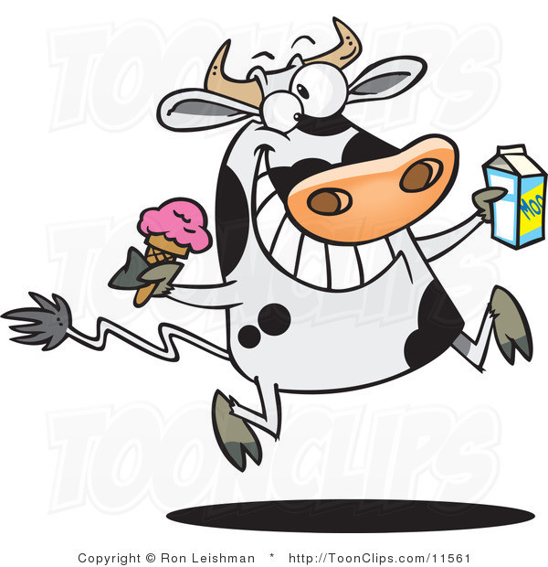

Mean Meat - The revenge
Michela Zucca & Ludovic Delafontaine
Michela Zucca & Ludovic Delafontaine
Notre but n’est pas de vous pousser à devenir végétarien ou vegan, mais à vous expliquer les problèmes liés à la surconsommation de viande et vous inviter à consommer celle-ci de manière plus responsable.
Vous souhaitez comprendre pourquoi la viande est tant critiquée ? Pourquoi le mouvement végératien et vegan est plus qu'une mode ? Et si ces bobos gauchos avaient une raison de se passer de la viande ?
Il existe de multiples interrogations au sujet de la viande. C'est la raison pour laquelle nous vous invitons à suivre Margueritte et Gretta pour mieux comprendre quelle est la situation !
La consommation excessive de viande ? Un réel problème de notre société.
Plusieurs articles démontrent l'impact négatif sur la planète et notre santé de la consommation excessive de viande. Le problème étant que celle-ci ne cesse d'augmenter.
Une surface agricole de 323 m2 est néccessaire pour produire 7kg de céréales utilisées pour produire 1kg de viande bovine. L’augmentation des terres cultivées entraine la déforestation (80% de la déforestation amazonienne) et s’accompagne d’une utilisation massive de pesticides et d’une perte de biodiversité.
L’élevage consomme une quantité non-négligeable en eau, soit 1,5 m3 d’eau/kg de viande bovine et produit 18% des émissions de gaz à effet de serre, soit plus que les transports.
Sans oublier la souffrance animale de la production industrielle de viande, les problèmes sanitaires, la pollution et les maladies cardio-vasculaires liés à la viande transformée.
L’élevage produit environ 18% des émissions de gaz à effet de serre d’origine humaine, c’est le taux relevé par l'ONUAA ou FAO,
organisation des nations unies pour l’alimentation et l’agriculture, dans son rapport de 2006. En 2013 des chiffres plus précis
établissent un taux participatif de 14.5% d’émission de gaz à effet de serre d’origine anthropique, dont 8.8% pour les bovins.
La FAO prévoyait en 2011 une augmentation de la demande de viande à hauteur de 73%.
D’après une enquête menée pendant 3 ans en 2009 par Greenpeace, l’élevage bovin serait responsable de 80% de la déforestation amazonienne,
soit 14% de la déforestation à l’échelle mondiale. La forêt amazonienne représente à elle seule la moitié des forêts tropicales restantes
sur la planète. Elle est la forêt la plus grande mais également celle avec la plus grande biodiversité.
Ce qui fait du commerce de la viande bovine le moteur de déforestation le plus important au monde.
Toujours selon le rapport de 2006 de la FAO 70% des terres qui étaient boisées dans le passé, et 91% des terres déboisées depuis 1970 sont utilisées pour les ranches (structure destinées principalement à l’élevage extensif) des bovins.
La question du stockage de carbone par les prairies destinées à l’élevage est complexe, il dépend de nombreux facteurs : conditions climatiques, compositions des sols, ancienneté des prairies… Selon les cas les prairies peuvent stocker moins, autant ou plus de carbone que les forêts. Ce stockage de Carbonne peut compenser en partie les émissions de l’élevage dues à la fermentation entérique et aux déjections animales. L’impact sur l’environnement peut être amoindri grâce aux prairies, toutefois on élève en moyenne 1.5 grand bovin de 600kg par hectare. Sachant que la viande consommable ne représente que 37% de l’animal, on obtient une productivité de 333kg par hectare. A savoir qu’un hectare produit 3 tonnes de soja qui contient 50% de protéines en plus que la viande de bœuf.
Le 5ème rapport du GIEC, Groupe d’experts intergouvernemental sur l’évolution du climat, estime qu’il serait possible de réduire de 36% les émissions de GES d’origine agricole et de 8% les émissions totales, en appliquant simplement les recommandations nutritionnelles de la Harvard Medical School. Soit, en limitant sa consommation journalière à 10g pour la viande de ruminant et à 80g pour les autres viandes, le poisson et les œufs.
Une étude britannique a évalué que les végétaliens émettait 2.5 fois moins de GES que les omnivores consommant 100g de viande par jour
La quantité d’eau utilisée lors de la production d’aliments est généralement séparée en trois catégories. L’eau bleu qui représente l’eau douce des nappes phréatiques, des rivières... L’eau verte qui représente l’eau de pluie et l’eau grise étant l’eau nécessaire pour absorber les polluants générés lors de la production.
En tenant compte de ces 3 catégories d’eau, 15'400 litres sont nécessaire pour produire 1 kg de viande de bœuf, 6'000 litres pour 1kg de
porc contre 1600 litres pour 1kg de céréales.
Environ 50% de la pollution des eaux en Europe est dû à la production de denrées alimentaires d’origine animale. Dans ce calcul est pris
en compte les 3 catégories d’eau et tout l’acheminement pour obtenir un produit consommable, l’irrigation des cultures, l’abreuvage du
bétail, la consommation lors de la transformation de la viande et du transport.
La viande est ainsi l’aliment qui possède la consommation en eau la plus élevée. Pour un kg de rôti de bœuf, il faut 100'000 litres
d’eau. Pour produire un seul hamburger de 125g, presque 13'000 litres d’eau potable.
Chaque année en moyenne, une personne consomme 1200 m3 d'eau pour la production de ses aliments. Dans les pays les plus pauvres cette consommation se situe autour de 600m3 par an. Les régions consommant le plus de viande, utilisent 1800m3 d’eau par an et par personne. Pour mieux illustrer ces chiffres : Si l’alimentation se compose de 80% de végétaux et 20% de viande, il faut 1300m3 d’eau par an, par personne. Cette quantité est divisée par 2 pour une alimentation purement végétale. Actuellement dans les pays industrialisés la part d’origine animale dans l’alimentation tourne autour des 30 à 35%.
Une denrée d’origine végétale consomme en moyenne seulement 10% de la quantité d’eau nécessaire à la production de viande. Ainsi pour produire 1kg de pommes de terre il ne faut que 500 litres d’eau et 2000 litres pour 1kg de soja ou de maïs. Pour nourrir les habitants de la planète sur la base d’une alimentation végétarienne, à hauteur de 2500 kcal, par jour, il faudrait 360'000 litres d’eau par personne et par an. Si on inclut 20% d’aliments d’origines animale dans l’alimentation cette valeur grimpe à 1 million de litres. Aux Etats-Unis l’estimation s’élève à 1,7 millions de litres par personne.
Selon la FAO, l’élevage est également la plus grande source polluante des eaux, principalement au travers des défécations d’animaux, des antibiotiques, des hormones, des produits chimiques des tanneries, des engrais et des pesticides utilisées pour les cultures fourragères.
L’accumulation dans l’eau des nitrates, du phosphore et autres nutriments est responsable de la prolifération des algues vertes et de dégénération des récifs coralliens. Cette contamination est responsable de la mort de nombreux animaux aquatiques. La gestion des déjections dans les élevages intensifs provoque des infiltrations de nitrates et agents pathogènes dans les nappes phréatiques qui mettent en péril les réserves d’eau potable.
Les émissions d’ammoniac sont à 95% d’origine agricole, dont 80% de l’élevage, et est la principale cause de pluie acide. Celles-ci perturbent la photosynthèse des plantes et détruisent les éléments nutritifs du sol, cause du dépérissement forestier. Les lacs, fleuves et ruisseaux sont également concernés par ces pluies acides. On constate une réduction et une disparition d’espèces aquatiques sensibles aux changements du pH.
Les systèmes industriels de productions se sont standardisés dans les pays développés et se répandent dans le pays en développement. Le nombre d’animaux élevés en confinement, dotés d’une variabilité génétique très pauvre et soumis à une croissance rapide, crée des conditions idéales pour l’apparition et la prolifération de nouveaux agents pathogènes. Un système d’incubateur à virus.
Pour parer à ce problème, les élevages consomment énormément d’antibiotiques pour les soigner mais également pour accélérer leurs croissances. L’utilisation massive des antibiotiques favorise le développement des souches bactériennes résistantes.
Le directeur adjoint de l’OMS, Keji Fuguda, estime que mourir des suites d’une infection banale ou blessure mineur pourrait redevenir monnaie courante, à l’horizon 2030. De même une récente étude britannique estime qu’en 2050 les dangers liés à l’antibioresistance pourraient provoquer la perte annuelle de 10 millions de vies humaines.
La surconsommation de viande, principalement rouge, augmente le risque des maladies telles que le cancer du côlon, les maladies cardio-vasculaires, l’obésité, le diabète de type 2 et de manière générale augmente la mortalité. L’OMS a officiellement classifié avec certitude que les viandes transformées sont cancérigènes et que la viande rouge en générale l’est probablement.
L’académie américaine de Nutrition et Diététique a établi qu’une alimentation végétarienne / végétalienne bien conçue est bonne pour la santé. Elles peuvent être bénéfiques pour la prévention et le traitement de certaines maladies. Elles sont également appropriées à tout âge, durant la grossesse et l’allaitement, l’enfance et l’adolescence, et également pour les sportifs.
On entend souvent parler de carences pour les alimentations végétarienne ou végétalienne, notamment pour la vitaime B12. Ce qui ne serait pas le cas pour les carnivores. Toutefois, ce que l'on ignore c'est que la vitamine B12 n’est produite ni par plantes, ni par les animaux. Seules quelques bactéries et archées ont les enzymes nécessaires à sa biosynthèse. La synthèse chimique de la vitamine B12 a été réussie par Robert Burns Woodward et Albert Eschenmoser en 1972. La vitamine B12 est distribuée dans l’alimentation destinée aux élevages.
Outre les biens faits personnels pour la santé d’une alimentation d’origines végétales, l’impact sur la population conduirait à limiter les déficits liés aux assurances maladies.
795 millions> est, selon la FAO, le nombre de personne sous-alimentées dans le monde. Un enfant sur trois dans les pays en développement souffre de malnutrition>. Elle diminue la résistance au maladie, provoque de handicaps mentaux et physiques et accroit la mortalité.
Une étude menée par la FAO indique que les animaux sont de mauvaises sources d’énergie en alimentation humaine>. Dans les pays occidentaux, la quantité de protéines végétales donnée aux animaux comme alimentation n’est pas rentable. Pour obtenir 1 kg de protéines animales> il faut donner 7 kg pour les bovins>, 6 kg pour les poulets et les cochons, 3 kg pour les œufs. Si l’on tient compte uniquement des aliments comestibles pour les humains le ratio baisse mais reste significatif, soit 5 kg pour les poulets, 4.4 kg pour les cochons, 2.8 kg pour les œufs. Toutefois les bovins passent à 1 kg car ils sont principalement nourris de fourrage et de pâturages.
Il faut bien plus de terre pour produire 1kg de protéines animales que de protéines végétales.
Dans le monde, 33% des terres cultivables> sont destinées à produire l’alimentation des animaux d’élevage>. 26% de la surfaces des terres émergées non couvertes par les glaces sont employés pour le pâturage. Au total 70% des terres à usage agricole sont consacrées à l’élevage. Cela représente 30% des terres émergés non couverte de glace. 85% de la production mondiale du soja est destinée à l’alimentation animale.> Les céréales et le soja> sont des denrées hautement nutritive et peuvent être consommées> directement par l’humaine. Les consacrées à l’alimentation des élevages n’est pas une affaire rentable.
Des économistes ont estimé le prix des denrées alimentaires en 2030>. Ils ont comparé les résultats avec un scénario> où la demande de viande dans les pays développés baisse de 50% par rapport à l’an 2000. La Chine et le Brésil inclus dans ce scénario.
Une baisse approximative de moitié du prix des aliments d’origine animale>, ce qui amène à une augmentation de leur consommation dans le Tiers-monde de 35%. Mais la consommation globale diminue tout de même de 20%.
La baisse de 20% de production mondiale de viande entraine une baisse des prix de nombreux aliments>. Le manioc et le blé baisse de 7%, les patates douces de 10%, le maïs, l’orge, l’avoie et le millet de 20%, les oléagineux (soja, tournesol, palme,..) de 21%. La ration calorique par habitant se voit augmenter dans les pays du Tiers-monde. En Afrique une augmentation de 81 calories par personne et par jour. Le nombre d’enfant en bas âge souffrant de malnutrition diminue à 2.2 millions>.
Les victimes> de notre consommation excessive de produit d’origine animale sont les animaux mangés>. Il est impossible de produire une telle quantité de viande sans entasser les animaux, les doter de corps difformes à cause des sélections génétiques, les adapter de forces à des conditions de vies exécrable allant jusqu’à la mutilation.
La plupart des fermes professionnelles développées depuis les années 70 ressemble à des hangars immenses, imposants, ou des milliers d’animaux sont enfermés.
- 83% des 800 millions de poulets de chair sont élevés sans accès à l’extérieur.
- 68% des 47 millions de poules pondeuses sont élevées en batterie de cages.
- 99% des 36 millions de lapins sont élevées en batterie de batterie de cages.
- 95% des 25 millions de cochons sont élevés sur caillebotis en bâtiment.
Mêmes si les bovins sont moins touchés par ce phénomène, certains d’entre eux sont aussi enfermés dans ces fermes. Les œufs de poules, canards ou dindes, éclosent par millier dans des armoires à incubation.
Les animaux sont livrés par lot>. Tous les animaux d’un lot ont les mêmes caractéristiques. Naissance, sevrage, engraissage, transport et abatage. Tout planifié et synchronisé.
Les animaux sélectionnés comme futures souches sont les plus rentables en capacité d’engraissement. Ainsi il existe une souche « poule pondeuse » ou encore « poulet de chair ». Les poussins males issus de la souche « pondeuse » sont broyés ou gazés en début> de leur courte vie. La souche « foie gras » effectue aussi une sélection à la naissance. En début de vie les femelles n’étant pas utilisées pour produire le foie gras sont éliminées.
Les animaux destinés à la production de lait de vaches, brebis ou chèvres, sont inséminées chaque année>. Les petits auxquels elles donnent naissances sont rapidement retirés. Séparation affectant aussi bien le nouveau-né que la mère.
Les poules pondeuses pondent jusqu’à 300 œufs par ans dans ces conditions, contre une 15ènes à l’état sauvage. >
Les sélections génétiques> ont aussi des conséquences>, des malformités apparaissent chez les animaux. Des poulets et des vaches se mettent à boiter, l’un pousser à produire plus de muscle au détriment de leurs organes, d’autres à produire plus de lait.
Dès le début de leurs vies, des mutilations> sont opérées pour « adapter » les animaux à la claustration, à la surpopulation et au goût des consommateurs.
Parmi celles-ci :
- Épointage des becs.
- Dégriffage des pattes des volailles.
- Coupe de queues.
- Rognage des dents de cochons.
- Ecornage des veaux.
- Castration des porcs, veaux et chapons.
Une directive européenne> tente de limiter les souffrances inévitables> de la mise à mort des animaux et des progrès notables ont été réalisés grâce à cette règlementation. Malheureusement les infractions restent nombreuses>.
Depuis plusieurs années des vidéos provenant de différents sites d’abattoirs ont été divulguées. On y voit tortures et cruautés> envers les animaux. Certaines de ces vidéos provenant d’établissement disposant du Label Rouge ou d’une certification Ecocert toutes aussi cruelles que les autres. La mise à mort d’un animal reste un acte violent, mais il est de notre responsabilité d’éviter toutes souffrances inutiles à l’animal. Ainsi les souffrances évitables doivent être éviter.>
La cruauté envers les animaux démontre de la cruatué humaine. Toutes formes de cruautés quelqu'en soit la cible est à bannir de notre civilisation.
Nous remercions Margueritte et Gretta pour tous ces précieux renseignements !
Maintenant que nous avons conscience des différents problèmes liés à la viande, existe-il un compromis ?
Pas de problème ! Il existe aujourd'hui de nombreuses alternatives à la viande, hourra !
Les grandes enseignes proposent des produits de substitution à la viande composés de champignons, légumes, soja et autres produits végétaux.
Il est aussi possible de se fournir dans des magasins spécialisés (bio, végératien ou vegan) afin de trouver des produits plus originaux.
Je ne veux pas me taper l'affiche !
Pas de soucis, même dans une soirée hamburger, tu passeras inaperçu avec ton steak végé qui ressemblera à s'y méprendre à un steak de viande. Vos amis pourraient même essayer de vous le voler, attention !
Super ! Je veux connaître plus de produits !
Kein problem. Avec le vaste choix disponible, tu peux sans autre adapter tes plats courants avec des produits végératiens. Tu as besoin de quelques exemples ?
J'aimerais faire encore plus
Tu pourrais t'intéresser aux laits végétaux qui sont une très bonne alternative aux produits issus des animaux. Tu pourras découvrir plusieurs saveurs (lait d'amende, de noisettes, de riz, etc.).
Et si cela ne te suffit pas, Margueritte et Gretta t'invitent à te reseigner sur le mouvement végan qui comblera sans doute tes besoins.
C'est tout à fait compréhensible ! Tu n'es pas obligé de devenir végétarien pour avoir une alimentation responsable.
Il te suffit de réduire tes quantités de viande. Pourquoi ne pas réduire progressivement le nombre de plats contenant de la viande que tu consommes par semaine, jusqu'à trouver un équilibre qui te convienne.
Mais quand je ne mange pas de viande, je mange quoi ?
Tu peux t'inspirer des plats d'autres cultures afin d'y trouver des idées de plats sans viande. De nombreux plats que tu consommes sans doute déjà ne contiennent pas de viande ! Par exemple, une bonne ratatouille, une bonne soupe ou encore tes fameuses pâtes à la sauce tomate ! Mais n'oublie pas les légumineuses (pois-chices, haricots rouges, etc.) qui sont très bon et peuvent tout à fait remplacer un steak.
Ah super, mais ca va vraiment changer quelque chose ?
Oui, en modifiant ton alimentation tu as un réel impact sur la planète. Tu permetteras de faire des économies d'eau. Plus d'animaux pourront profiter du grand air. Plus de monde pourront manger à leur faim. Les prix des aliments pourront baisser. Tu bénéfiera d'une meilleur santé. Et tu découvriras de nouvelles saveurs. Youpi tout ca en modifiant simplement quelque plats.
Pas de problème tu peux aussi participer à une alimentation responsable sans réduire tes quantités de viande.
La qualité de la viande dépend de son mode de production. Te renseigner sur l'origine de ta viande permet de t'assurer que celle-ci est produite dans des conditions ethiques. Une viande heureuse est une viande savoureuse.
Très bien. Où est-ce que je fais mes courses?
Tu peux opter pour une consommation locale, par exemple en cherchant ta viande chez le boucher ou pourquoi pas directement chez le paysan Cela peut te paraître étonnant mais ca risque même d'être meilleur marché.
Et si tu veux aller plus loin, certain éleveurs proposent de livrer la viande sous certaines conditions. La plus importante étant de garantir que l'animal entier sera consommer pour éviter de gaspiller une ressource limitée. Le mieux est de te renseigner auprès des éleveurs de ta région ils pourront peut-être te proposer d'autres solutions auxquels nous n'avons pas pensées.
Wikipédia - Déforestation de la forêt amazonienne
Wikipédia - Impact environnemental de l'élevage
Wikipédia - Vitamine B12
www.viande.info - L'impact de la viande sur les humains, les animaux et l'environnement
www.swissveg.ch - Pour les animaux, l’environnement et la santé
www.cahiers-antispecistes.org - Les animaux emballages
www.fao.org - Statistiques de l'ONU